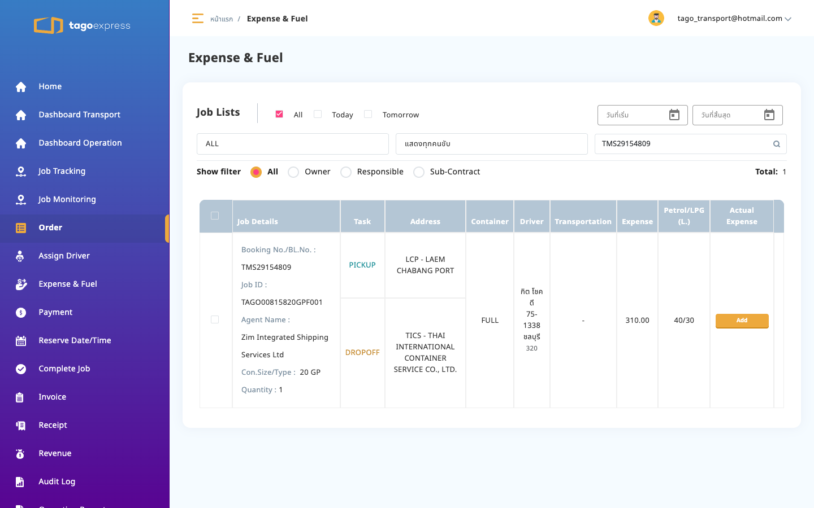
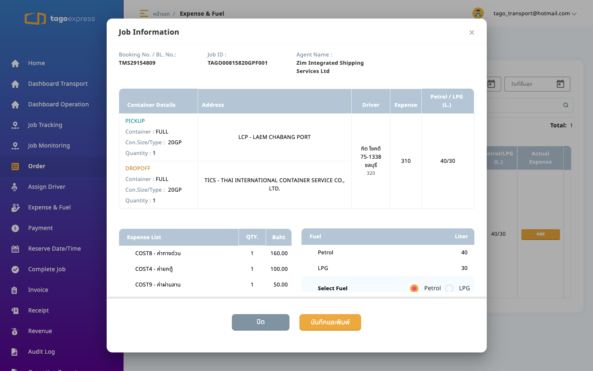
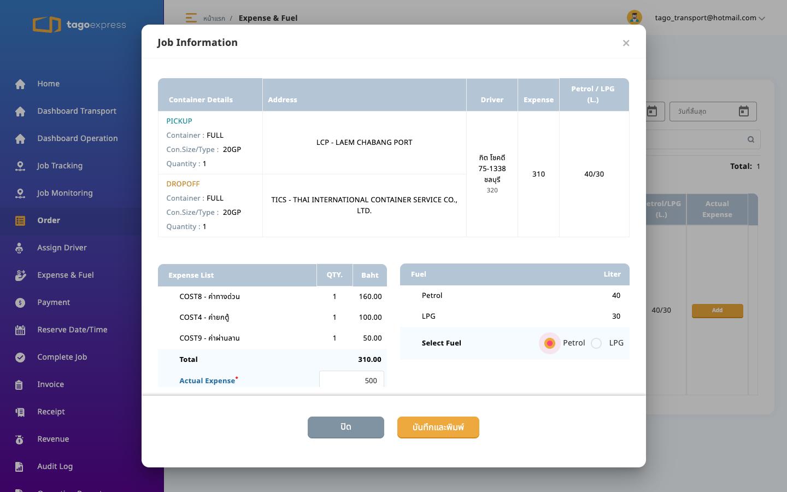
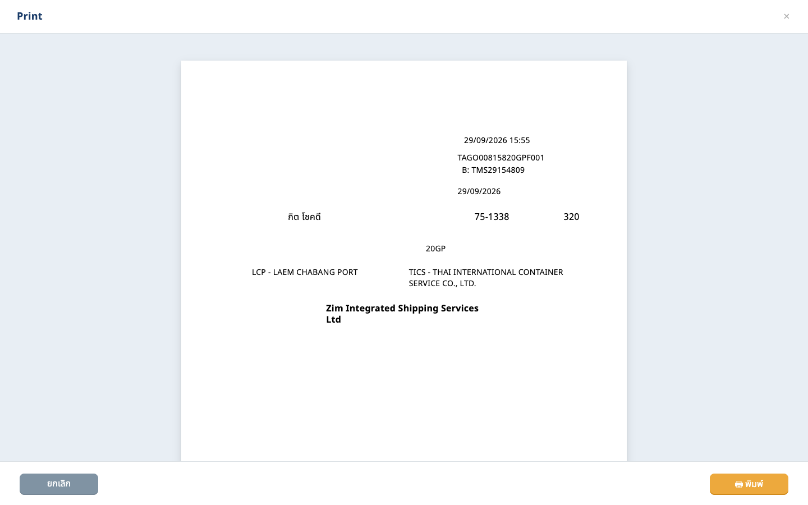

5. หลังบันทึก expense ผ่าน
http://localhost:4200/advance-fuel/preview/86869

13:00–13:10 ค่าใช้จ่าย
ผลรวม: ผ่าน
http://localhost:4200/advance-fuel

http://localhost:4200/advance-fuel

http://localhost:4200/advance-fuel

http://localhost:4200/advance-fuel/preview/86869

http://localhost:4200/advance-fuel/preview/86869